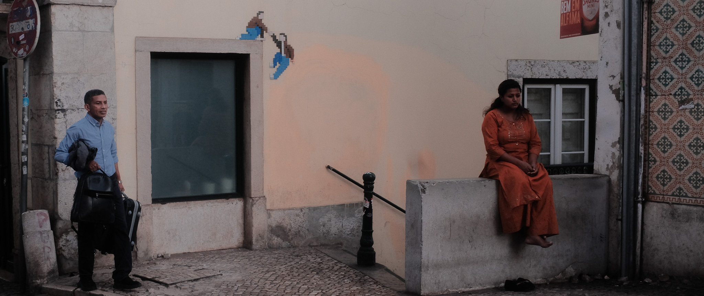
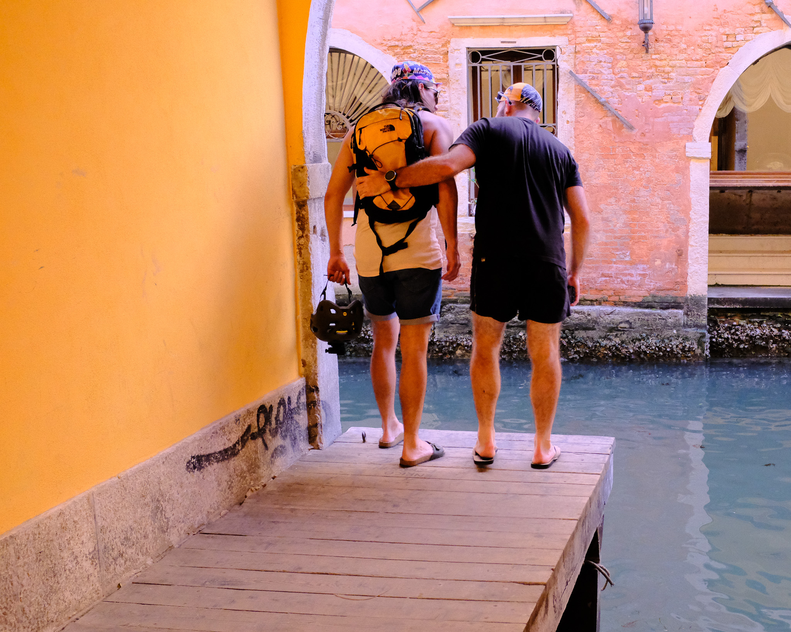

Four Directions
The album detail page is the last surface still using the pre-redesign language — rounded tiles, soft shadows, a glass top bar, and a hardcoded stone palette with no dark mode. Each direction below rebuilds it in the sharp editorial system the blog and labs indexes already share.
All four use the real Favourites album: 43 photographs, 14 locations, 6 print editions.
Shared constraints — zero border radius, hairline rules only, Newsreader 300 headings, Space Mono metadata,
one yellow accent, 0.7s cubic-bezier(0.25, 1, 0.5, 1). Every direction has a light/dark toggle in the corner.
Contact Sheet
A uniform hairline grid where every photograph sits inside its own cell, letterboxed rather than cropped, with a mono caption bar beneath carrying the frame number, location, and orientation. Hovering one frame drops its neighbours to 28% so the sheet reads like a light table. Location filters run along the top rule.
Strength: the closest sibling to the labs index; scales cleanly to 43 frames and stays scannable.
Risk: the most restrained of the four — uniform cells give every photo equal weight, which is honest but flat.

Filmstrip Essay
One photograph per viewport, alternating left and right against open space, each revealed on scroll with a slow 1.6s settle from 1.06 scale. The caption lives in the margin beside the frame as a mono note block. A hairline yellow rule at the top tracks position, and the header swaps in the current location as you pass it.
Strength: gives each photograph real weight and matches the homepage hero's cinematic register.
Risk: 43 frames becomes a very long scroll with no way to skim or jump.

Sticky Spread
A sticky left rail holds the album title, description, and counts above a scrollable numbered index of every frame. As images pass the midpoint of the viewport their index entry takes a yellow left rule and scrolls itself into view; clicking any entry jumps to that frame. Images run down a single measure on the right, portraits held narrow and panoramas breaking out to the edge.
Strength: the only direction that solves wayfinding in a 43-photo album, and it sharpens the marginalia
motif already in the blog post layout.
Risk: the rail has to collapse entirely on mobile, so small screens fall back to a plainer column.

Curator's Wall
A printed rhythm rather than a grid: a full-bleed opener, then a pair matched on aspect ratio, then a single inset frame alternating left and right — repeating down the page, each spread opening on a hairline rule marked with its plate number and places. Edition data is typeset into the caption block on the rule (€280 · Edition of 5 · 4 sold · Enquire) instead of floating over the image as a pill.
Strength: the most designed of the four, and the only one that makes the prints funnel feel deliberate.
Risk: the rhythm is imposed by an algorithm, not by editing — some pairings will land better than others.